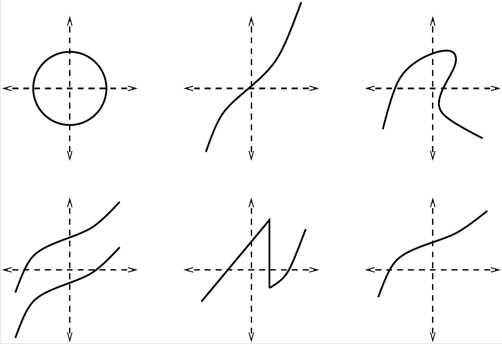
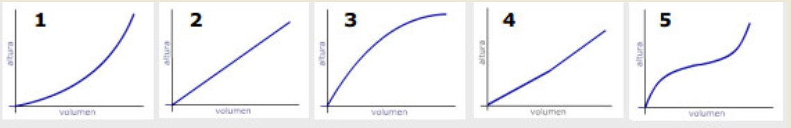
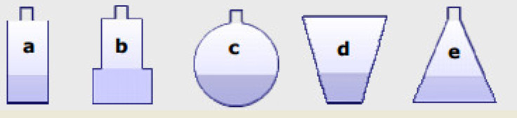

2.1. Worksheet 0: Review of basic notions#
Before starting the theory of functions, let us see what we remember from everything we have learned in previous mathematics courses… Try to do the following exercises and, if you have doubts about any of them, review that topic thoroughly!
Compute or simplify whenever possible:
\[\begin{split} \begin{array}{lclclclcl} \text{$({\rm a})$ } \dfrac{5^{\frac{3}{2}}}{\sqrt{5}} & \qquad & \text{$({\rm b})$ } 3^{\frac{3}{2}} \sqrt{3} & \qquad & \text{$({\rm c})$ } 3^{{\frac{3}{2}}} \, 3^{{\frac{1}{2}}} & \qquad & \text{$({\rm d})$ } 3^{{\frac{3}{2}}}+3^{{\frac{1}{2}}} \\ \\ \text{$({\rm e})$ } (3^5)^2 & & \text{$({\rm f})$ } 3^{5+2} & & \text{$({\rm g})$ } 3^5\,3^2 & & \text{$({\rm h})$ } (3^2)^5 & & \text{$({\rm i})$ } (5^{1/2})^{3/2} \end{array} \end{split}\]Simplify the following expression:
\[\frac{1}{x-3}-\frac{1}{x+3}+\frac{12}{x^2-9}\]Compute the result of squaring the following expressions:
a. \(6+a\)
b. \(6-a\)
c. \(-6+a\)
d. \(-6-a\)
The value of \(\sqrt{16}\) is
a. 4
b. -4
c. it has two values: \(4\) and \(-4\).
Rationalize:
a. \(\dfrac{\sqrt{x+5}}{\sqrt{x-3}}\)
b. \(\dfrac{\sqrt{x+5}}{\sqrt{x}-3}\)
The following set of points, \(A = \left\{ x \in \mathbb{R} \, / \, 3x-5 < 7 \right\}\), is:
a. \(A = (4,+\infty)\)
b. \(A = (-\infty,4)\)
c. \(A = (0,4)\)
d. \(A = (-\infty,12)\)
Compute the following sets of points:
a. \(B = \left\{ x \in \mathbb{R} \, / \, x^2 - 3x + 2 > 6 \right\}\)
b. \(C = \left\{ x \in \mathbb{R} \, / \, 3x - 5 < 7, \, x^2 - 3x + 2 > 6 \right\}\)
c. \(D = \left\{ x \in \mathbb{R} \, / \, -3\leq 2-5x\leq 12 \right\}\)
One solution of the equation \((x-3)^4+\sqrt{x+1}+(x-82)=0\) is:
a. \(x = 1\)
b. \(x = 0\)
c. \(x = \sqrt[4]{\dfrac{2}{3}}\)
d. \(x = \ln\left(\dfrac{2}{3}\right)\)
For the equation \(x(x-3)=1\), the solutions are:
a. \(x=1\) and [\(x-3=1 \Longrightarrow x=4\)]
b. \(x=\dfrac{3 \pm \sqrt{13}}{2}\)
c. \(x=0\) and \(x=3\)
Solve the following equations:
a. \(\dfrac{1}{x} + \dfrac{1}{x-5} = 3\)
b. \((x-3)(x^2-4x+4)=0\)
c. \(3^x=81\)
Andrés and Pablo live in two towns A and B, 25 km apart. Andrés leaves A towards B walking at 4 km/h and Pablo travels from B towards A on a bicycle at 6 km/h (both leave at the same time). At the point where they meet they will plant a tree. At what distance from A will they plant it?
A group of friends wants to split up a record collection. If they take 3 records each, 5 are left over, and if each took 4, one record would be missing. How many friends are there and how many records are in the collection?
The value of \(i\) is:
a. \(-1\)
b. \(\sqrt{-1}\)
c. it does not exist
d. \(\pm 1\)
e. \(\pm\sqrt{-1}\)
f. I do not know what \(i\) is
Relationship between degrees and radians:
a. What is the relationship between the angles \(45^\text{o}\) and \(\pi\) radians?
b. How many radians is \(30^\text{o}\)?
c. Convert \(75^\text{o}\) to radians.
d. Convert \(\dfrac{17}{12}\pi\) radians to degrees.
Angles will ALWAYS be given in radians.
The equation \(y=3x^2\) represents a
a. circumference
b. line
c. parabola
d. hyperbola
Which of the following drawings could represent the graph of a function? Why?

It is known that the profit (or loss), in thousands of euros, from the sale of a certain item, depending on the number \(x\) of units sold, is given by \(y(x)= x^2-199x-200\).
a. Determine the profit if we sell 250 items.
b. Determine how many items you must sell to obtain a profit of 19,800 euros.
c. Determine from what sales quantity profit begins to be made.
d. Draw the graph of the profit/loss function and interpret it.
Match each of the five graphs with the filling process of each container:


{kind=link}
{kind=link}
{kind=link}